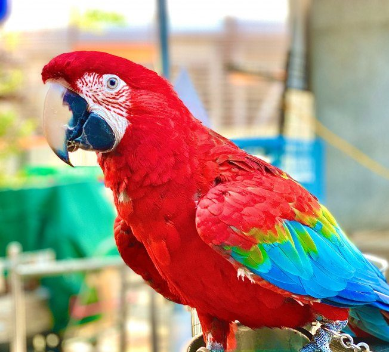

parrotParrots may not make good pets for most people because of their natural wild instincts such as screaming and chewing. Although parrots can be very affectionate and cute when immature, they often become aggressive when mature (partly due to mishandling and poor training) and may bite, causing serious injury. |
 |